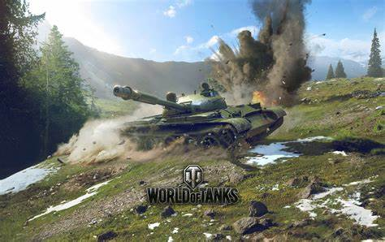

A World of Tanks egy online többjátékos akciójáték, amelyet a Wargaming fejlesztett és adott ki. A játék 2010. augusztus 12-én jelent meg először, és azóta számos frissítést és bővítést kapott. A World of Tanks középpontjában a páncélozott harcjárművek állnak, és a játékosok különböző tankokat irányítanak, amelyek a 20. század közepén, főként a második világháború időszakában használt modelleken alapulnak. A játék elérhető Microsoft Windows, PlayStation 4, Xbox One, Xbox 360 és más platformokon.
A World of Tanks játékmenete a tankok közötti taktikai csatákra összpontosít. A játékosok különböző nemzetek tankjait irányíthatják, és részt vehetnek különböző játékmódokban, amelyek változatos kihívásokat és harci helyzeteket kínálnak. A játékmenet kulcselemei a következők:
A játékban több mint 600 különböző tankmodell érhető el, amelyek különböző nemzetekhez tartoznak, például az Egyesült Államok, Németország, Szovjetunió, Nagy-Britannia, Franciaország, Kína, Japán és mások. A tankok különböző osztályokba sorolhatók:
A World of Tanks különböző játékmódokat kínál, amelyek különböző kihívásokat és harci élményeket nyújtanak:
A játékosok a csaták során tapasztalati pontokat (XP) és krediteket szereznek, amelyek segítségével fejleszthetik és testreszabhatják tankjaikat. A játékosok különböző modulokat és felszereléseket vásárolhatnak, amelyek növelik a tankok hatékonyságát a harcban. A tankok fejlesztése mellett a játékosok különböző legénységi tagokat is képezhetnek, akik további bónuszokat és képességeket nyújtanak.
A World of Tanks nagy hangsúlyt fektet a stratégiai gondolkodásra és a taktikára. A játékosoknak meg kell tanulniuk, hogyan használják ki tankjaik erősségeit és gyengeségeit, valamint hogyan működjenek együtt csapattársaikkal a győzelem érdekében. A térképek különböző terepviszonyokat és akadályokat kínálnak, amelyeket a játékosok kihasználhatnak a védekezés és a támadás során.
A World of Tanks aktív és elkötelezett közösséggel rendelkezik. A játék támogatja a klánokat, ahol a játékosok egyesülhetnek és közösen vehetnek részt csatákban. A klánok különböző rangokat és jutalmakat szerezhetnek, valamint részt vehetnek a klánháborúkban. A játékosok közötti kommunikáció fontos eleme a játékélménynek, és a játék támogatja a hang- és szöveges csevegést is.
A World of Tanks rendszeres eseményekkel és frissítésekkel tartja fenn a játékosok érdeklődését. Ezek az események gyakran új tartalmakat, tankokat, térképeket és játékmódokat hoznak a játékba. A fejlesztők folyamatosan dolgoznak a játék egyensúlyán és teljesítményén, figyelembe véve a közösségi visszajelzéseket is.
A World of Tanks lenyűgöző grafikai megjelenítést kínál, részletes tankmodellekkel és realisztikus környezetekkel. A játék motorja támogatja a valós idejű árnyékokat, dinamikus világítást és különféle időjárási effektusokat. A játék optimalizált a különböző platformokra, biztosítva a sima és élvezetes játékmenetet.
A World of Tanks ingyenesen játszható, de tartalmaz mikrotranzakciós rendszert, ahol a játékosok valódi pénzért vásárolhatnak prémium tartalmakat. Ezek közé tartoznak a prémium tankok, prémium fiókok, amelyek gyorsabb előrehaladást és több jutalmat biztosítanak, valamint különféle kozmetikai elemek, amelyek nem befolyásolják a játékmenetet.
A World of Tanks egy izgalmas és taktikai mélységet kínáló online többjátékos játék, amely a tankok szerelmeseinek és a stratégiai harci játékok rajongóinak egyaránt ideális választás. A változatos tankok és játékmódok, a rendszeres frissítések és események, valamint az aktív közösségi elemek mind hozzájárulnak ahhoz, hogy a játék hosszú távon is érdekes és szórakoztató maradjon. A fejlesztők elkötelezettsége a játék egyensúlyának és teljesítményének folyamatos javítása iránt biztosítja, hogy a World of Tanks a legjobb tankos játékok között maradjon.
